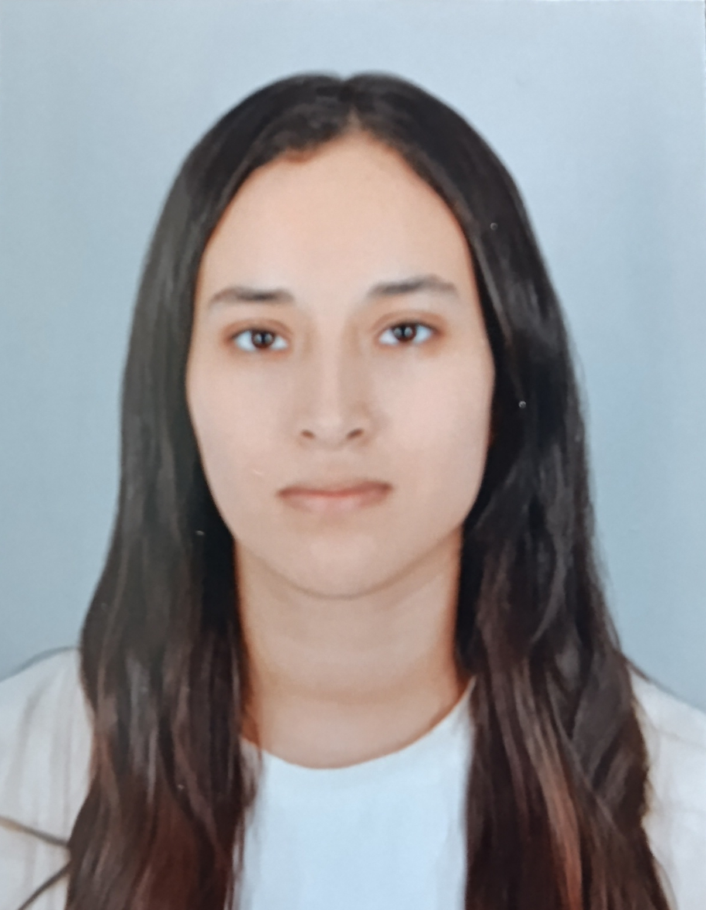

Recherche de stage PFE de 6 mois à partir de mars 2027
Email : zaakiaout@gmail.com
Téléphone : 07 45 70 75 63
Mobilité : Île-de-France et toute la France
Étudiante en Master 2 Réseaux à l'Université Sorbonne Paris Nord – Institut Galilée, ingénieure en Télécommunications et Réseaux, à la recherche d'un stage de fin d'études de 6 mois à partir de mars 2027 en réseaux et sécurité.
| Période | Entreprise | Poste et missions |
|---|---|---|
| 02/2026 - 08/2026 |
Banque Centrale Populaire
Casablanca, Maroc |
Stagiaire ingénieure
Conception et développement d'un parapheur électronique bancaire multi-signataires intégré à la PKI. Technologies : Java, Spring Boot, React, PostgreSQL, Docker, Python. |
| 07/2025 - 08/2025 |
Centrelec
Casablanca, Maroc |
Stagiaire sécurité réseau
Configuration d'un pare-feu Sophos XGS, NAT et politiques de sécurité. Déploiement d'un VPN IPsec site-à-site sous GNS3. |
| 07/2024 - 08/2024 |
Groupe OCP
Safi, Maroc |
Stagiaire administration systèmes
Déploiement et sécurisation d'Active Directory sous Hyper-V. Gestion des incidents avec GLPI. |
| Période | Diplôme | Établissement |
|---|---|---|
| 09/2026 - Aujourd'hui |
Master 2 Ingénierie et innovation
en image et réseaux
Parcours : Réseaux |
Université Sorbonne Paris Nord
Institut Galilée, Villetaneuse |
| 09/2021 - 09/2026 | Diplôme d'ingénieur d'État en Télécommunications et Réseaux |
Université Cadi Ayyad
ENSA Safi, Maroc |
| Période | Projet | Technologies |
|---|---|---|
| 10/2026 - Aujourd'hui | Homelab SOC/SOAR automatisé | Linux, Wazuh, n8n, Grafana |
| 11/2024 - 02/2025 | Architecture SD-WAN multi-sites sécurisée | FortiGate, AWS, VPN |
| 01/2024 - 02/2024 | Homelab de sécurité réseau | pfSense, Apache, Wireshark |
| Domaine | Compétences |
|---|---|
| Sécurité réseau | FortiGate, Sophos XGS, pfSense, ACL, IDS/IPS, Wireshark |
| Sécurité applicative et PKI | TLS, X.509, PAdES, AES, SHA-256, OWASP |
| Systèmes et virtualisation | Linux, Windows Server, Active Directory, VMware, Hyper-V, GNS3 |
| Réseaux et routage | TCP/IP, VLAN, OSPF, NAT, DNS, DHCP, VPN IPsec, SD-WAN |
| Scripting et outils | Python, PostgreSQL, Docker |
| Langue | Niveau |
|---|---|
| Français | Courant |
| Anglais | Avancé |
| Arabe | Langue maternelle |
| Période | Fonction | Club |
|---|---|---|
| 11/2024 - 11/2025 | Responsable média | Club de cybersécurité ZERO DAY |
| 09/2023 - 09/2024 | Vice-présidente | Club de robotique FALCON |